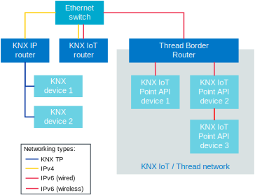

The KNX IoT Point API stack is an open-source reference implementation of the KNX IoT standard.
This implementation has been integrated with the nRF Connect SDK, hence it can be used to build a KNX-IoT device based on Thread networking protocol including all the benefits it has to offer.
The KNX IoT Point API solution is described in chapter 3/10/5 of the KNX Specifications.
This chapter covers:
The IPv6-based transport layer that is suitable, among others, for Thread-based networks.
A new communication/message protocol using the CoAP protocol and the CBOR format.
Usage of the following data already used by other KNX transport layers:
Functional blocks and messages.
S-mode message semantics.
Configuration data to set connection between devices.
Products that implement the KNX IoT Point API stack use IPv6-based protocols, such as Thread, for communication with the rest of the KNX installation.
All KNX devices, regardeless of the transmittion methods used, can be easily interconnected within the same system.
KNX IoT Point API devices are based on the same interoperability concept as KNX TP (Twisted Pair), KNX PL (Power Line) and KNX RF (Radio Frequency) methods.
It means that the same semantic data are shared through the transport layer.
Lower layers of the protocol stack are not KNX-specific - the Thread protocol is used instead.
For this reason, a middleware is required for sharing the data between KNX IoT and non-IoT parts of the system.
Note
The middleware functionality could be implemented as a separate device called KNX IoT router.
It is connected to the same IP network as the KNX IP router.
The KNX IoT router is responsible for transmitting data in both directions:
From KNX IoT Point API devices through the Thread Border Router to other KNX devices through the KNX IP router.
From other KNX devices through the KNX IP, KNX IoT and Thread Border Routers to KNX IoT Point API devices.
Moreover, if it is needed and there are enough hardware resources, this feature can be implemented as an additional service on Thread Border Router device.
The diagram below presents a sample of the KNX installation that combines KNX devices using various communication methods within a single system.

To get more details on the KNX IoT and KNX IoT Point API, see the sources listed on the Additional resources page.